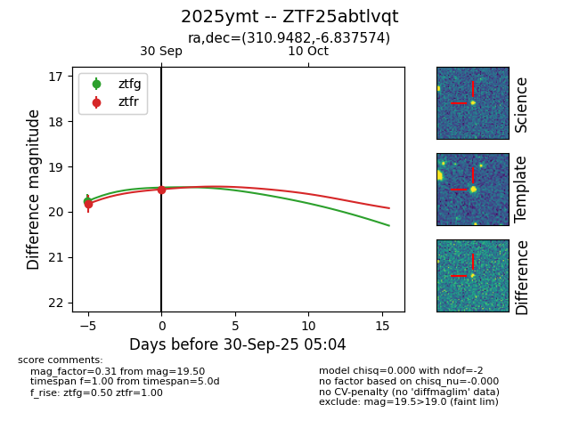
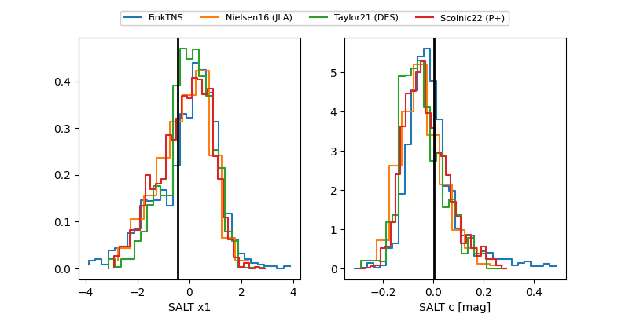

FINK: ZTF25abtlvqt
Lasair: ZTF25abtlvqt
ALeRCE: ZTF25abtlvqt
TNS: 2025ymt
YSE: 2025ymt
ZTF25abtlvqt (ztf,fink)
2025ymt (tns,yse)
equatorial (ra, dec) = (310.9482,-6.83757)
galactic (l, b) = (39.9099,-28.05684)


last ztfg=19.77, ztfr=19.50
1 ztfg, 2 ztfr detections